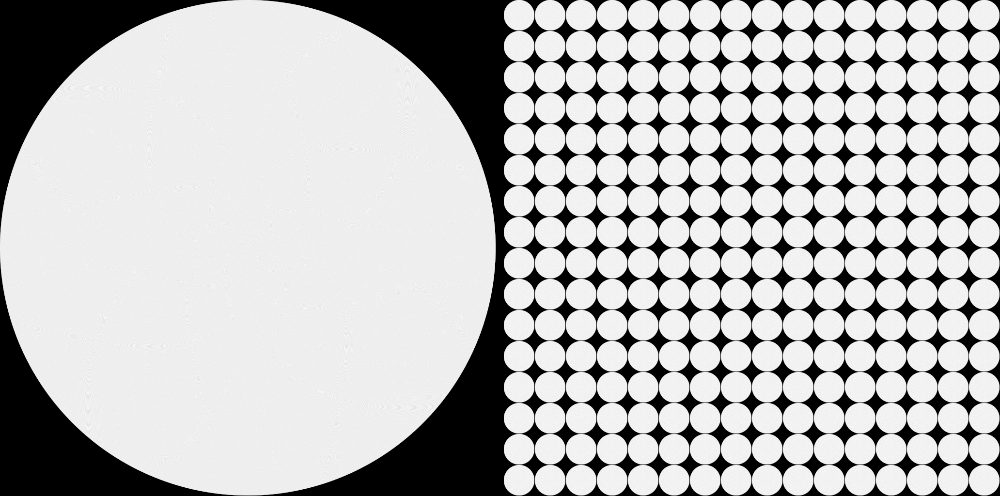
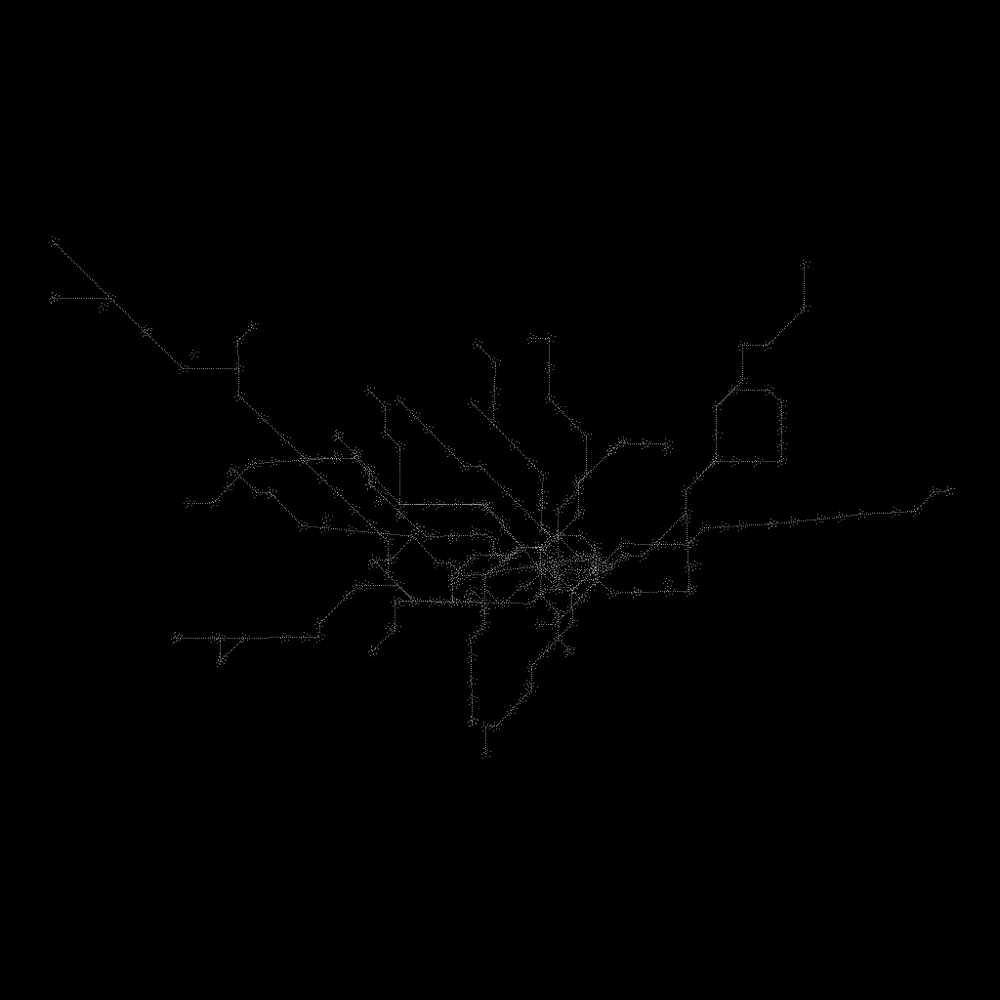

Iteration 1: 67,108,864 particles under two laws; the Underground, 341 stops; scope tests 4 of 9 tests; 0 failed
testcode/particles/01-run-20260918t0120z · machine-made on the MSI at 20260918T0120Z by particle-physics-drawing-engine · all iterations
Same-sized particles, positions computed from the address by a named law, nothing stored. Left: one spiral. Right: a stack of layers of 262,144 slots, angle by whole-number arithmetic.

67,108,864 particles; spiral 20.93 s, stack 26.71 s; cells lit 823,777 / 824,320A network from the typed command draw underground: topology from Transport for London's open data, drawn as the same particles under an eight-direction schematic law. No map artwork.

11 lines, 341 stops, 314 edges, 6,336 particles. Powered by TfL Open Data. Contains OS data © Crown copyright and database rights 2016 and Geomni UK Map data © and database rights 2019.Generated layers, regenerated and hashed on this machine
| layer | size | hash of every line | time |
|---|---|---|---|
| layer 1 | 262,144 slots | 7e8e65dc0ae61eec… | 0.63 s |
| layer 16 | 262,144 slots | 7e8e65dc0ae61eec… | 0.62 s |
| layer 64 | 262,144 slots | 7e8e65dc0ae61eec… | 0.62 s |
| layer 256 | 262,144 slots | 7e8e65dc0ae61eec… | 0.63 s |
Scope status
# Scope status 2026-09-18T01:21:39Z
Ran 4 of 9 tests; 0 failed. Tests marked NOT YET BUILT have no script yet (T1 needs a person with the phone).
| test | what | status | run | last line |
|---|---|---|---|---|
| T1 | a physical iPhone draws one layer | **NOT YET BUILT** | | `` |
| T2 | exactness of the angle law | **PASS** | exit 0, 0.1 s | `PASS: limit 0.25 px within one layer` |
| T3 | cross-device positions within a pixel | **NOT YET BUILT** | | `` |
| T4 | generator determinism: a layer regenerates identically | **PASS** | exit 0, 1.2 s | `DNA: regenerated 262144 of 262144 slots on Windows-11-10.0.26200-SP0; MATCH 7e8e65dc0ae61eec... vs 7e8e65dc0ae61eec...` |
| T5 | address to source in one request | **NOT YET BUILT** | | `` |
| T6 | a law missing a fact refuses by name | **NOT YET BUILT** | | `` |
| T7 | sixteen layers served from the workstation's second drive | **NOT YET BUILT** | | `` |
| B1 | spiral and stack side by side | **PASS** | exit 0, 4.3 s | `{"layers": 4, "particles_per_layer": 65536, "particles": 262144, "spiral": {"cells_lit": 262144, "peak_per_cell": 1, "se` |
| B2 | a network from a typed command (the Underground) | **PASS** | exit 0, 1.8 s | `{"command": "draw underground", "source": "https://api.tfl.gov.uk/Line/Mode/tube + /Line/<id>/Route/Sequence/all", "attr` |
This page charts measured facts. It is not a design tool; above 100 kW a chartered electrical engineer signs.